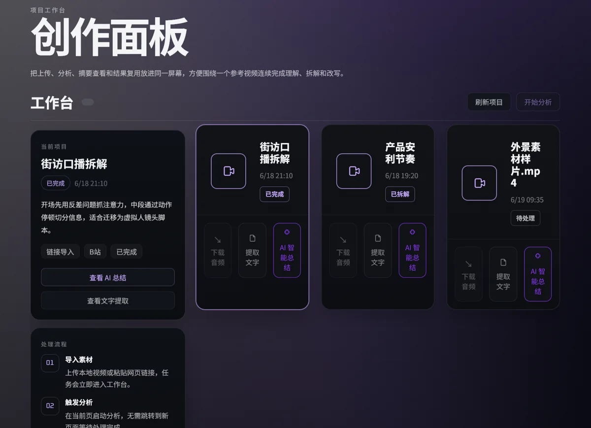

大文件分片上传
提供分片状态与合并逻辑，避免只依赖一次完整文件请求。

短视频创作者需要从参考视频中整理台词、镜头与节奏，再继续改写。VideoMind 围绕视频项目组织上传、理解、拆解和创作输出，让结果可以保存与继续使用。
前端接收视频素材，后端管理文件与项目状态。
将转写与摘要等耗时任务从上传请求中拆出。
保存场景、动作、对白、镜头与内容钩子。
围绕目标平台、人设、语气与受众生成改写草稿。
提供分片状态与合并逻辑，避免只依赖一次完整文件请求。
通过文件 MD5 识别重复内容，为复用已有分析结果提供依据。
用媒体文件、场景段落和改写草稿承接不同层次的输出。
仓库包含 Vue 3 工作台、Spring Boot 后端、媒体处理与远程 AI 策略，也提供本地演示模式。演示模式返回固定样例，不能据此证明任意视频的真实分析效果。本页展示已有界面与实现，不提供在线上传服务。